|
平成２３年度 活動記録 |
2012/3/31・4/1 | |
◆ 伊豆半島・伊豆稜線歩道 参加者：生徒17名 教員1名 |
3/31東京駅⇒修善寺駅→修善寺→日枝神社→だるま山キャンプ場TS |
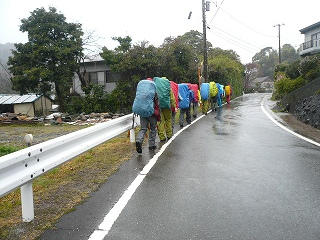 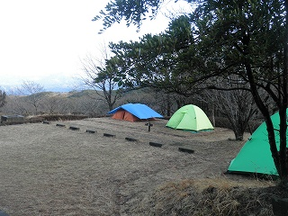 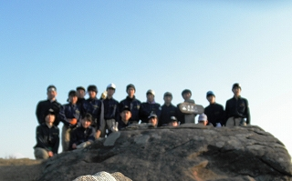 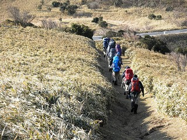 | |
2012/2/12 | |
◆ ウィンターハイキング（前道志・矢平山／倉岳山／高畑山） 参加者：生徒17名 教員3名 |
JR中央線・四方津駅→新大地峠→矢平山→寺下峠→細野山→立野峠→倉岳山→穴路峠→高畑山→馬頭観音→堀之内→JR中央線・鳥沢駅 |
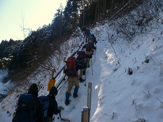 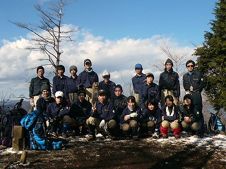 | |
2012/1/15 | |
◆ 葛飾柴又ロードレース 参加者：生徒17名 教員1名 |
毎年恒例のロードレース。中学生は３km、高校生は10ｋｍの部に参加した。今年は入賞者は出なかったが、全体のタイムは良好で、トレーニングの成果が見事に発揮された。大会後は帝釈天を参拝して、インドカレーの店で新年会を行った。天候にめぐまれ爽快な一日となった。 |
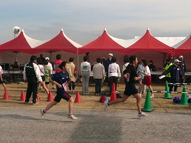 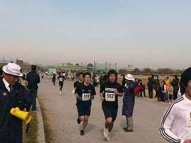 | |
2011/12/26〜28 | |
◆ 冬合宿 房総半島（三石山・清澄山系／烏場山・高鶴山系／大日山・御殿山系）参加者：生徒17名 教員3名 |
12/26 三石山・清澄山山系での登山活動（全体で活動）上総亀山駅→三石山→地蔵峠→元清澄山→清澄寺→東京大千葉演習林宿泊施設泊 |
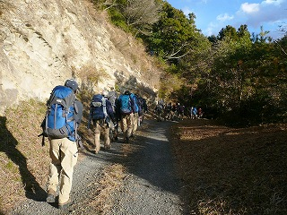 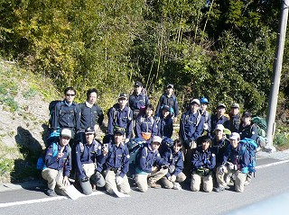 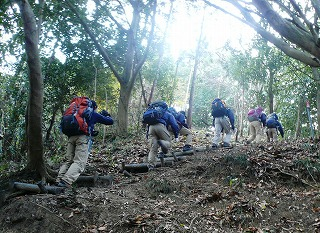 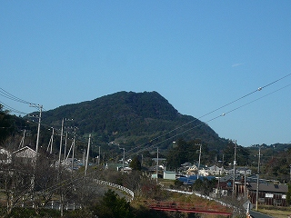 | |
2011/12/3・4 | |
◆ 秋合宿（奥武蔵・正丸峠、伊豆ヶ岳コース、武川岳コース、カバ山コース）参加者：生徒17名 教員3名 |
正丸駅→長岩峠→名栗元気プラザ |
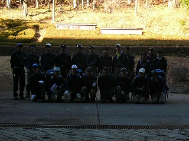 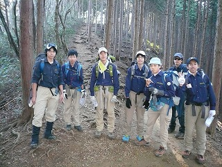 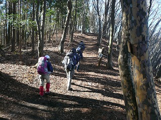 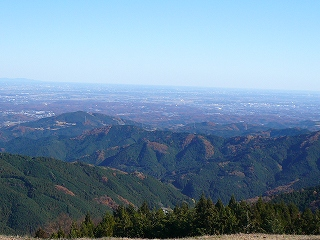 | |
2011/11/23 | |
◆ 秋山行（日帰り・奥多摩・浅間峠、陣馬山、高尾山） 参加者：生徒14名 教員3名 |
JR五日市駅⇒上川乗→浅間峠→熊倉山→三国山→生藤山→連行峠→醍醐丸→高岩山→和田峠→陣馬山→堂所山→景信山→小仏峠→城山 → 高尾山→京王線高尾山口駅 |
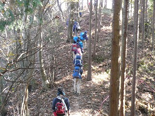 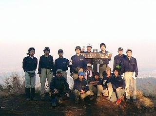 | |
2011/10/2 | |
◆ 10月山行 （秩父・熊倉山） 参加者：生徒9名 教員1名 OB 1名 |
武州日野駅→矢通反隧道→山ノ神 →一ノ橋 →三ツ又→笹平→ 熊倉山→営林小屋→谷津川林道→法雲寺→橋場→白久駅 |
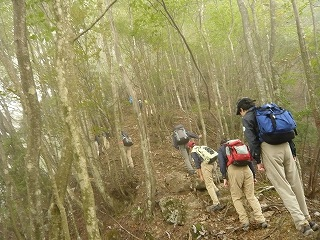 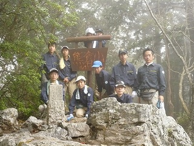 | |
2011/9/30・10/1・2 | |
◆ 関東高校登山大会（八ヶ岳・赤岳、権現岳） 参加者：生徒6名 教員2名 |
Ａ隊（男子チーム）： 美の森ファーTS→牛首山 →赤岳稜線→赤岳→大天狗→小天狗→美の森ファーTS |
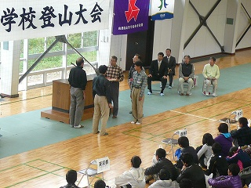 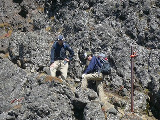 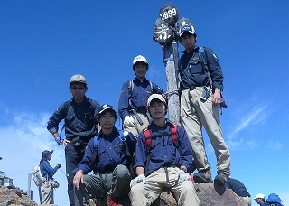 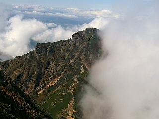 | |
2011/9/10・11 | |
◆ 槐祭（学園祭）展示と山の歌コンサート |
槐祭では、今年も年間の山行記録の展示とテント等の備品の紹介、さらに恒例となった山の歌コンサートを実施した。今年の曲目は旅鳥・エーデルワイスの歌・穂高よさらば・ワンゲルポルカ・アルプスの恋歌に加えて、旅人よ・俺たちの旅・やさしさに包まれたなら・どんなときも の計10曲を熱唱し、保護者や友人など多くの皆様に楽しんでもらった。 |
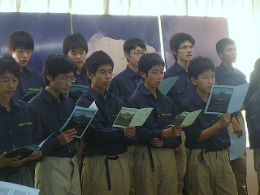
| |
2011/8/1〜6 | |
◆ 夏合宿（北アルプス・奥穂高〜蝶ヶ岳） 参加者：生徒14名 教員3名 OB１名 |
JR新宿駅⇒JR松本駅⇒上高地バスターミナル→小梨平TS→明神→徳沢→横尾→涸沢TS→ （ザイテングラード）→穂高岳山荘→奥穂高岳→穂高岳山荘→涸沢 → 横尾山荘TS→槍見台→稜線分岐→蝶ガ岳ヒュッテTS →三俣⇒ JR豊科駅⇒JR清里駅→八ヶ岳少年自然の家泊→（周辺の巡検）→JR新宿駅 |
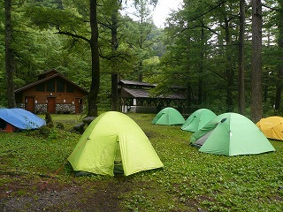 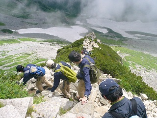 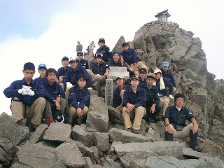 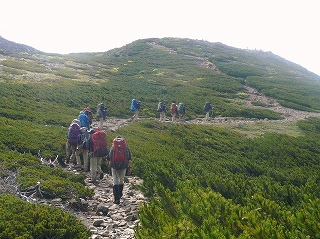 | |
2011/7/17 | |
◆ トレーニング山行 （奥多摩・本仁田山〜川苔山） 参加者：生徒12名 教員2名 |
JR奥多摩駅→安寺沢→本仁田山→瘤高山 →大ダワ→舟井戸→川苔山→舟井戸→大根ノ山ノ神⇒JR鳩ノ巣駅 |
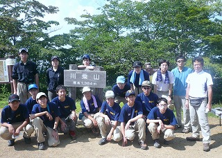 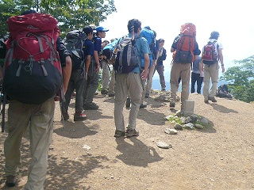 | |
2011/6/25・26 | |
◆ 6月合宿（丹沢・表尾根から塔ノ岳・丹沢山） 参加者：生徒13名 教員3名 |
小田急線渋沢駅 ⇒大倉→滝沢園TS(幕営)→新茅山荘→作治小屋 →新大日ノ頭→塔ノ岳→丹沢山→塔ノ岳→ 大倉尾根⇒小田急線渋沢駅 |
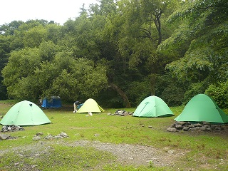 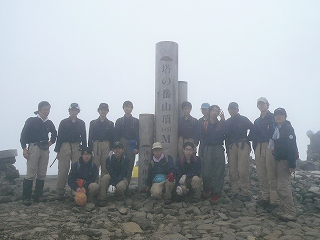 | |
2011/5/28・29 | |
◆ 千葉県高等学校安全登山講習会 参加者：生徒13名 教員１名 |
東金青年の家を会場に、千葉県高体連主催の安全登山講習会に参加した。読図・医療・気象・装備など、これまで部内で独自に研究、研修してきたが、学校行事の日程変更のおかげと、部員増加の状況もあり、復部後、初めて参加することができた。特に１年生にはとてもよい学習の機会となった。こうして得た知識が今後の合宿に活かされることを期待したい。 |
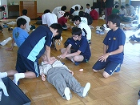 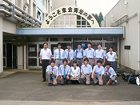 | |
2011/5/13・14 | |
◆ 千葉県高等学校登山競技大会 参加者：生徒14名 教員２名 |
JR奥多摩駅→氷川キャンプ場 １日目：幕営、技術、知識の審査 ２日目：氷川キャンプ場→稲荷神社→三ノ木戸山 のコースで体力審査。下山後、閉会式。 |
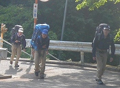 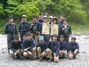 | |
2011/5/3〜5 | |
◆ ５月合宿（奥多摩・雲取山〜石尾根下降） 参加者：生徒14名 教員２名 |
JR奥多摩駅⇒鴨沢→堂所→奥多摩小屋TS→七ツ石山→鷹ノ巣山→六ツ石山→氷川キャンプ場TS→三ノ木戸山→JR奥多摩駅 |
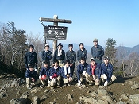 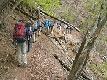 | |
2011/4/17・24 | |
◆ 総体コース試走・新人歓迎山行（奥多摩・三ノ木戸山） 参加者：生徒15名 教員１名 OB１名 |
JR奥多摩駅→奥多摩神社→三ノ木戸山→氷川キャンプ場→新人歓迎会→JR奥多摩駅 |
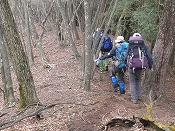 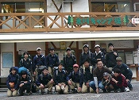 | |